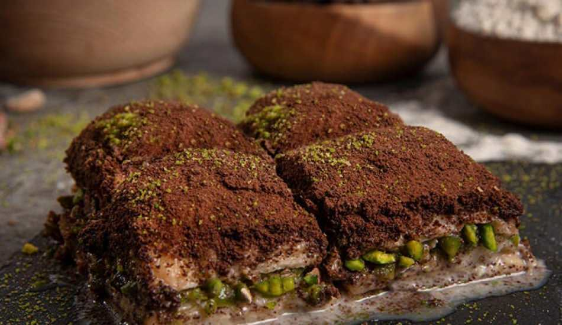

Soğuk Baklava Tarifi
Soğuk baklavanın temelinde baklava yufkası, süt ve çikolata yatmaktadır.
Tabi içerisinde antep fıstığı ya da cevizi olmazsa olmazlarındandır.
Normal baklavaya göre daha fazla
rağbet görmesinin sebebi ise baklavaya nazaran daha az şekerli olması ve daha hafif olmasıdır.
Tarif: İsmail İbrahim Onay

Malzemeler
-
1 paket baklavalık yufka
-
250 gr tereyağı
Şerbeti için:
- 4 bardak süt
- 1 bardak su
- 2 bardak toz şeker
Arası için:
- İyi çekilmiş antep fıstığı ya da iri çekilmiş ceviz ya da fındık
Üzeri için:
- 2 yemek kaşığı kakao
- 50 gr bitter yada sütlü çikolata rendesi
Nasıl Yapılır
-
Tatlıyı yapmaya başlamadan önce şerbeti ocağa koymakla başlayalım. Bir tencere içerisine süt su ve şekeri alalım ve ocağı açalım.
Bir süre kaynadıktan sonra altını kapatalım ve bir kenara alalım.
-
Bir tava yardımı ile tereyağını eritelim.
Çok küçük bir kısmı ile baklava yapacağımız tepsiyi ya da borcamı yağlayalım.
-
Baklavalık yufkaları borcam boyutunda keselim. Kullanacağınız borcam 30 cm’lik olabilir.
Yufkaları iki eşit parçaya ayıralım ve alt katı için bir yarısını üst katı için diğer yarısını kullanalım.
Her bir katı bir fırça yardımı ile yağlayalım.
-
Baklava katlarının arasına çok kalın olmayacak şekilde kenar parçaları da koyabilirsiniz.
Her katı yağlamayı unutmadan tüm katları yağlayarak yufkaları üst üste dizelim.
-
Ardından baklavanın içerisine koyacağımız malzemeyi serpiştirelim.
Antep fıstıklarını serpiştirirken her yere özellikle köşelerine de dağılmasına dikkat edelim.
-
Arasına malzemeyi yerleştirdikten sonra da baklavanın
üst katını da araları yağlanacak şekilde dizelim.
-
Son olarak baklavamızın üst katını da yağlayalım ve göze
hoş gelmeyen kısımlarını düzeltelim.
-
Baklavanızı istediğiniz şekilde dilimleyebilirsiniz.
Ancak kare şekilde dilimlemek daha faydalı olacaktır.
-
Önceden ısıtılmış 180C’lik fırında altı ve üstü kızarana kadar pişiriyoruz.
Fırın tipine göre ortalama 1 saat ile 1 saat 15 dakika arasında pişmektedir.
-
Baklavalar piştikten sonra ilk sıcağının çıkması için 5-10 dakika beklenmelidir.
-
Şerbet verme işlemi sıcak baklavaya soğuk şerbet şeklinde olmalıdır.
-
Tatlı şerbetlendikten sonra şerbeti çekmesi ve soğuması için ilk olarak oda sıcaklığında
yaklaşık 1 saat bekletilmelidir.
-
Baklava yeterince soğuduktan sonra üzeri için, elek yardımı ile üzerine
kakao ve ince rendelenmiş çikolataları gezdirelim.
-
Bu aşamada isterseniz süt tozu ile karıştırdığınız kakaoyu kullanabilir ya da iyice toz
haline getirdiğiniz çikolatayı kullanabilirsiniz.
-
Servis ederken üzerine çekilmiş antep fıstığı serpiştirerek servis edebilirsiniz.
Afiyet Olsun..